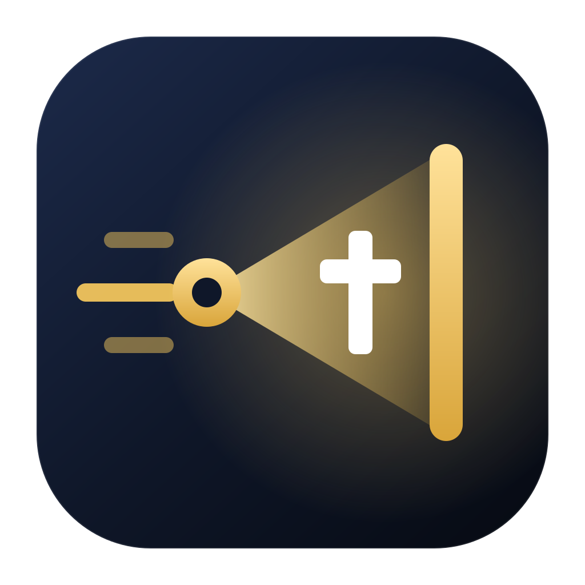

AGENT HSPAgent HSP listens to the preacher, projects the right Bible verse in seconds, runs the service flow on spoken cues, and writes the summary. Every AI model runs on your own machine.
The verse engine is deterministic Rust code: fast, free and testable. The listening and summarizing brains are small local models. Each does only what it is best at.
Whisper speech-to-text runs natively on your CPU or GPU. Speak naturally; partial results stream in as you preach.
"John three sixteen", "the third chapter of Romans", "psalm 91, verses one to five" — every spoken form resolves in under a second, by code, not by guesswork.
Verses render with animated themes, hold for 60 seconds, then a live summary slide takes over: the sermon's title, points and passages.
"It's time for praise and worship" fires your sequence: a 12-second splash, then the soundtrack with synced lyrics.
The title of your message, your numbered points, and every passage collect into notes and a closing summary — from your own words.
One key approves or skips every AI action. One key holds all automation. Panic blacks out everything. Manual mode needs no AI at all.
Plug the machine into the projector and the mixing desk. That is the whole setup.
A USB feed from the mixing desk, or just the laptop mic. The voice detector learns the room and only listens when someone speaks.
Speech becomes text on your own machine. References, quotes, corrections and cues are resolved by the Rust engine and small local models.
Verses, lyrics, splashes and summaries render on the projector in your theme. NDI output feeds your livestream.
| PewBeam | VideoPsalm | Agent HSP | |
|---|---|---|---|
| Real-time verse display | Yes | Yes, local | |
| Full manual toolkit | Yes | Yes | |
| Cue-driven service automation | Yes | ||
| Runs fully offline | Yes | Yes | |
| Price | $14–30 / month | Free | Free, forever |
The desktop app is Tauri 2 + Rust: one codebase, small installs, native speed. The repo also ships a browser proof you can open in Chrome with zero install.